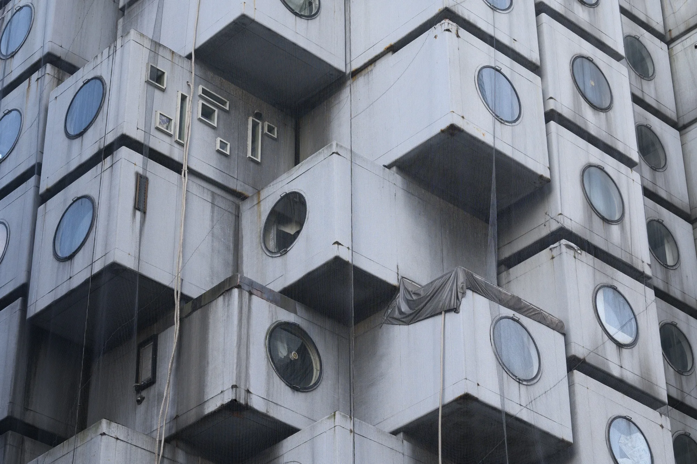

A visual collection of web projects created at Washington University in St. Louis during the Fall of 2025.

Needlepoint Microsite (Designer)
Designed a microsite with multiple pages about needlpoint. I included how-to's, links to purchase supplies, basic stitches, and links to blogs for more information.
Nakagin Capsule Tower (Creative Director)
I creative directed the direction behind this microsite, leading the concept and visual narrative.

Recipe Page
Designed a basic recipe page for chocolate layer cake